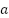
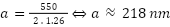

, basé sur la vitesse de la lumière dans le vide divisée
par la vitesse
, basé sur la vitesse de la lumière dans le vide divisée
par la vitesse  de la lumière dans le milieu
observé[10].
de la lumière dans le milieu
observé[10].
Wilhelm SALLES – ESRA Bretagne – ESRA Image – 2024/2025
Le placement d’illuminant dans le champ de la caméra, sa conséquence sur l’image et son utilisation en mise en scène.
https://wilgo001.github.io/memoireWS/
Superviseur de mémoire : Claude Rizzo
Sommaire
1. Les contraintes et les solutions au cours de l’histoire 3
a. Les débuts du cinéma, des sources artificielles et des premiers défauts 3
b. Le lens flare et les revêtements anti-reflet 5
i. optique géométrique et lois de Snell-Descartes 5
ii. onde électromagnétique et coefficients de Fresnel pour les couches anti-reflets 8
iii. Autres facteurs affectant le lens flare 13
c. Bokeh, starburst pattern : l’impact du diaphragme 15
i. Modèle simplifié et fonctionnement d’un objectif 15
ii. Le cercle de confusion et la profondeur de champ 16
iii. Les variations du bokeh 17
iv. Diffraction de Fraunhofer et stardust pattern 18
v. Le cinémascope et les objectifs anamorphiques, une histoire de diaphragme 20
d. Les filtres, les débuts d’un changement de paradigme 22
2. S’approprier les effets pour la mise en scène 23
a. Filmer le Soleil, le pari d'Akira Kurosawa 23
b. Le nouvel Hollywood, des effets de lumière au service du réalisme 26
c. La science-fiction, filmer les astres et les néons 29
d. Le lens flare : métaphore du divin dans le blockbuster américain 30
e. Le tuning optique pour un rendu personnalisé 31
Depuis quelque temps, on remarque une tendance dans le cinéma moderne. La technologie n’a jamais été aussi aboutie. On parvient à développer des capteurs avec une définition de 8K, d’autres avec une sensibilité exploitable de plus de 10 000 ISO, d’autres encore avec une dynamique de 17 stops. Il est commun aujourd’hui de sortir une image en HDR, avec plusieurs milliards de nuances de couleurs. Les objectifs modernes ont un piqué qui dépasse la perception humaine. Les images n’ont jamais été aussi “parfaites”.
Cette quête de l’image parfaite, l’image piquée, l’image correctement exposée, est au cœur de l’histoire du cinéma. Pourtant aujourd’hui, cette quête de l’image parfaite tombe en désuétude face à l’image “vivante”. Aujourd’hui, les cinéastes déforment, dégradent, sabotent leur image, pour lui donner un cachet, pour réveiller une nostalgie d’une autre époque. On use de filtres, d’optique vintage, de pellicules plutôt que de capteur numérique. Le but, éviter une image trop propre, une image sans âme.
Ce mémoire a pour but d’illustrer ce revirement. Cependant, il serait trop vaste de prendre le sujet dans son ensemble. Nous allons plutôt prendre un axe qui galvanise ces évolutions dans l’histoire du cinéma : le placement des illuminants dans le champ de la caméra, leur conséquence sur l’image et leur utilisation en mise en scène.
La lumière est à la base du cinéma. C’est la réflexion de la lumière sur une surface qui s’imprime sur la pellicule. Son placement dans le champ de la caméra a pourtant représenté un défi au cours de l’histoire. Souvent source de défaut, ses effets sur l’image sont aujourd’hui des outils de mise en scène très utilisés.
Nous allons analyser tout cela dans un ordre à la fois chronologique et thématique. Nous allons commencer par voir les différents effets que la lumière peut avoir sur l’image, et sur comment ces effets ont pu être amoindris au fil de l’histoire. Dans un second temps, nous allons voir comment différents réalisateurs se sont approprié la lumière, ses effets comme ses corrections, pour en faire des outils de mise en scène. Ce mémoire mélange à la fois des aspects techniques, scientifiques, physiques, mais aussi d’analyse filmique et de contexte historique. Pour une meilleure compréhension, les éléments scientifiques sont détaillés au maximum pour permettre une compréhension au plus grand nombre.
Alors que le cinéma n’en était qu’à ses balbutiements, le support pellicule était loin d’être aussi développé qu’aujourd’hui. À ses débuts, elle avait de nombreux défauts majeurs. Le premier était sa sensibilité extrêmement faible, estimée aujourd’hui entre 3 et 6 iso. Pour tout de même obtenir une image exploitable, il fallait à l’époque tourner en 16 images par seconde, avec un diaphragme très ouvert et avec des sources puissantes. Sur les films des frères Lumière, c’était la lumière naturelle, celle du Soleil, qui était utilisée. Sa forte intensité et ses ombres marquées, couplées à la faible dynamique de la pellicule, créaient des images très contrastées, avec un profond manque de détail.
Pendant plusieurs années, le Soleil fut l’unique source de lumière fiable pour les cinéastes. Dans les plateaux de cinéma de l’époque, on privilégie des toits en verre, comme dans les studios de Georges Méliès à Montreuil[1] vers 1908. C’est une décennie plus tard que Pathé et Gaumont installent leurs studios à Joinville-le-Pont. Ce studio sera, jusqu’en 1922, le premier et seul studio électrifié et obscur de France[2]. Le support pellicule était déjà plus sensible, et un éclairage entièrement artificiel pouvait alors suffire. Cependant cet éclairage nécessitait tout de même de puissantes lampes à arc électriques.
Avec le studio obscur, c’est un nouveau champ d’action qui s’ouvre. Les cinéastes commencent à expérimenter de nouvelles mises en scène, comme dans l'expressionnisme allemand. Des lumières directives, générant des ombres marquées. Placés sous la ligne d’horizons, elle capte les sujets par le dessous, en opposition à la lumière zénithale du soleil. C’est aussi l’occasion de créer de nouveaux environnements, avec l’arrivée des scènes de nuit ou en décors clos. Pour éclairer ces scènes, les différents metteurs en scène ont recours à des lumières diégétiques, qui pour la première fois apparaissent à la caméra.
C’est alors qu’un problème se pose. Jamais une source lumineuse n’avait été placée dans le cadre et captée par un film auparavant. Cela engendra une réaction inattendue sur la pellicule : l’effet de halo. Lorsqu’une forte source de lumière s’imprime sur la pellicule, elle traverse alors la surface sensible et le support pour se réfléchir sur le corps de la caméra. Elle ré-émulsionne alors la pellicule autour de la source de lumière, créant un halo autour de celle- ci (figure 1).
Figure 1 : à gauche, schéma de la coupe d’une pellicule sans filtre antihalo et de sa réaction à une source lumineuse[3]. À droite, exemple d’impression pellicule sans filtre antihalo[4].
Pour contrer cet effet, on applique un filtre antihalo, qui viendra absorber la lumière incidente et bloquer sa réflexion. On le positionne soit derrière le support souple de la pellicule, soit entre le support et la ou les couches sensibles[5] (figure 2).
Figure 2 : à gauche, schéma de la coupe d’une pellicule avec filtre antihalo et de sa réaction à une source lumineuse[6]. À droite, exemple d’impression pellicule avec filtre antihalo[7].
L’effet de halo fut le premier défaut dû au placement d’une source lumineuse dans le champ de la caméra remarquable de l’histoire du cinéma. Non pas que les autres défauts n'existent pas encore, mais ils sont occultés par d’autres imperfections, comme le vignettage, le manque de piqué des optiques et des pellicules de l’époque, le grain prononcé et la faible dynamique des surfaces sensibles.
Dans le contexte du placement de la lumière dans le champ de la caméra, le lens flare est le premier défaut optique qui vient à l’esprit. Le lens flare, ou facteur de flare en français, est la réflexion d’une source lumineuse dans le cadre, ou bord cadre, dans les différentes lentilles de l’objectif. En fonction de sa construction, ces reflets peuvent prendre la forme d’un voile qui réhausse les noirs et réduit le contraste. Cependant, le lens flare est plus souvent reconnu pour les différents halos qu’il génère (figure 3). Et pour cause, c’est aujourd’hui l'aberration optique la plus simple à repérer et la plus présente du cinéma moderne. Car oui, il s’agit bien d’une aberration au sens physique, que des générations d’ingénieurs et de fabricants ont tenté de minimiser. Pour analyser les différentes solutions trouvées pour contrer le lens flare, il faut d’abord comprendre son fonctionnement.
Figure 3 : exemple de lens flare sur un décor boisé[8]
L’origine du lens flare se trouve dans la réflexion de la lumière.
D’après le principe de Pierre de Fermat, mathématicien français du XVIIᵉ
siècle, “la lumière se propage d'un point à un autre
sur des trajectoires telles que la durée du parcours soit localement extrémale (localement
signifiant : pour une trajectoire réduite).”[9]. En d’autres termes, dans un même milieu, la
lumière prendra toujours le chemin le plus rapide, le plus court, soit une trajectoire rectiligne. La
vitesse de propagation de la lumière dans l’air ou dans le vide équivaut à
. On arrondit généralement la valeur à
. Cette vitesse est réduite lorsque la lumière passe
dans des milieux translucides ou transparents, comme l’eau, le verre, le plastique, etc. Pour
quantifier cette différence de vitesse, qui est toujours inférieure à , on utilise un indice de réfraction , basé sur la vitesse de la lumière dans le vide divisée
par la vitesse de la lumière dans le milieu
observé[10].
Chaque milieu possède un indice de réfraction différent, supérieur ou égal à 1 (1 étant l’indice de réfraction dans le vide ou l’air). Lorsqu’un rayon lumineux dans un milieu rencontre un autre milieu avec un coefficient de réflexion différent, ce rayon incident se décompose en un rayon réfracté, qui se propage dans le nouveau milieu, et un rayon réfléchi, qui “rebondit” sur le point d’incidence. On illustre et on mesure cette réaction dans un plan d’incidence (figure 4), où les deux milieux sont séparés par un dioptre. Le rayon incident entre au contact du dioptre sur le point d’incidence. On obtient alors l’angle d’incidence , par rapport à la normale au point d’incidence. L’angle de réflexion est l’angle du rayon réfléchi par rapport à la normale, se propageant dans le même milieu que le rayon incident. Enfin, l’angle de réfraction est l’angle du rayon réfracté par rapport à la normale, se propageant dans le second milieu en partant du point d’incidence.
Figure 4 : plan d’incidence avec en axe horizontal le dioptre et en axe vertical la normale[11]
Les angles de réflexion et de réfraction sont définis grâce aux 3 lois de Snell-Descartes. La première définit que le rayon d’incidence et le rayon de réflexion partagent le même milieu, comme vu plus haut. On peut illustrer les deux autres lois par deux formules :
2ᵉ loi :
3ᵉ loi :
Dans notre cas pratique, on peut définir une lentille de verre, d’indice de réfraction , comprise entre deux milieux vides, avec un indice de réfraction . Les réflexions successives, dont l’angle est identique à celui d'incidence, créent une réaction en chaîne dans le verre (figure 5). C’est cette succession de réflexions qui crée l’effet de lens flare. Sans traitement sur le verre, on estime qu’environ 4 % de la lumière est réfléchie[12].
C’est au XVIIᵉ siècle qu’une première piste est ouverte pour réduire ce taux de réflexion. Harold Denis Taylor, alors expert en optique chez Thomas Cooke and Sons of York (qui, plus tard, deviendra Cooke Optics Ltd), découvrit que les lentilles ternies par le temps avaient un
Figure 5 : Schéma montrant les réflexions et réfractions successives d’un rayon incident sur une plaque de verre[13]
coefficient de réflexion inférieur à celui des lentilles nouvellement polies. En 1935, l'entreprise Carl Zeiss breveta un système de filtre antireflet, appelé coating. Son principe repose sur la réflexion de la lumière d’après les lois de Snell-Descartes, vues plus tôt, mais aussi sur l’aspect ondulatoire de la lumière.
En effet, la lumière peut être séparée en deux théories. La théorie corpusculaire définit la lumière comme le mouvement de particules d’énergie appelées photons, de masse nulle et d’énergie :
avec  la constante de Planck, soit et la fréquence
de vibration de l’onde correspondante. La théorie ondulatoire, qui définit la
lumière comme une onde électromagnétique se propageant à la vitesse . On peut donc définir sa fréquence à partir
de sa longueur d’onde, avec la formule suivante :
la constante de Planck, soit et la fréquence
de vibration de l’onde correspondante. La théorie ondulatoire, qui définit la
lumière comme une onde électromagnétique se propageant à la vitesse . On peut donc définir sa fréquence à partir
de sa longueur d’onde, avec la formule suivante :
f = c / c₀
En tant qu'onde électromagnétique, elle peut être quantifiée par différents éléments, notamment son amplitude, notée , et son vecteur d’onde, noté , dépendant de la longueur d’onde [14]. Sa norme équivaut à :
La lumière est aussi soumise aux coefficients de Fresnel, qui permettent de déterminer la différence d’amplitude électrique et magnétique entre l’onde incidente, l’onde réfractée et l’onde réfléchie. C’est cette différence d’amplitude qui quantifie la quantité de lumière perdue en réflexion. Le coefficient d’amplitude de réflexion est le rapport de l’amplitude réfléchie sur l’amplitude incidente. Il peut s’écrire ainsi :
L’autre coefficient de Fresnel est le coefficient d’amplitude de transmission, qui équivaut au rapport de l’amplitude transmise sur l’amplitude incidente. On peut l’écrire ainsi :
Une onde électromagnétique se compose d’un champ électrique et d’un champ magnétique . Ces deux champs s'apparentent à deux ondes en phase sur une même normale (figure 6). Les coefficients de Fresnel s'appliquent à chaque champ indépendamment.
Figure 6 : Représentation d’une onde électromagnétique, avec oscillation couplée du champ électrique et du champ magnétique[15]
Dans le cadre du lens flare, nous nous concentrons sur le coefficient de réflexion. En développant la formule, notamment la valeur des amplitudes incidente et réfléchie, on obtient pour l’onde transverse électrique :
Et pour une onde transverse magnétique :
Avec et respectivement les coefficients de réflexion des champs électriques et magnétiques, et les milieux d’incidence et de réfraction, et et les angles d’incidence et de réfraction. Richard Taillet, dans son ouvrage sur l’optique physique[16], développe ceci : en prenant ces coefficients en compte, dans le cas d'une couche mince déposée entre le milieu incident et le matériau considéré, on observe que, pour un angle d'incidence normal :
où ,  est l’épaisseur de la couche mince, et les indices 1, 2 et 3 désignent respectivement le milieu incident, la couche mince et le milieu réfractant. Pour annuler la réflexion, le numérateur du coefficient de réflexion doit être nul. On développe alors l’équation suivante :
En développant k, on obtient :

En d’autres termes, pour limiter la réflexion du dioptre entre deux milieux d’indice de réfraction différents, il faut y intercaler une couche mince ayant un indice de réfraction équivalent à la moyenne géométrique des deux milieux incident et réfracté, soit , et d’une épaisseur proportionnelle à la longueur d’onde du rayon incident divisée par son indice de réfraction.
En mettant en place ces paramètres, on obtient une réaction physique permettant l’annulation de la réflexion du rayon incident. Cette réaction se déroule en deux temps. Dans un premier temps, le rayon incident traverse la couche mince par un premier dioptre, qui réfracte et réfléchit le rayon. Appelons ce premier rayon réfléchi . Ensuite, le rayon réfracté devient incident une fois qu’il pénètre le second milieu, il se réfléchit et se réfracte dans ce nouveau milieu. Ce second rayon réfléchi se réfracte à nouveau dans le premier milieu. Appelons cette seconde réflexion . Grâce à l’indice de réfraction de la couche mince et à l’épaisseur de cette couche relative à la longueur d’onde du rayon, et en accord avec les paramètres vus plus haut, et deviennent deux ondes électromagnétiques se rencontrent dans un même milieu, de même fréquence et de même amplitude, mais déphasées de . Or, si deux ondes de même fréquence, de même amplitude, se rencontrent, si elles sont phasées, leur amplitude double. Sinon, si elles sont déphasées d’une demi-longueur d’onde, alors leur amplitude devient nulle[17] (figure 7). C’est l’interférence destructive.
Figure 7 : schéma montrant le principe du filtre antireflet, avec la réflexion des rayons et réfléchis par la couche mince[18].
En 1935, Alexander Smakula, alors physicien chez Carl Zeiss, dépose un brevet pour une
couche antireflet à base de fluorure de magnésium (MgF₂)[19]. Il a pour cela mesuré l’indice de réfraction
le plus approprié pour une couche mince située entre l’air () et le verre ( [20]. Il a basé ses calculs sur la longueur
d’onde du spectre visible auquel l'œil est le plus sensible, à savoir 500 nm. En
reprenant les calculs vus plus haut et en les appliquant, on obtient :
[20]. Il a basé ses calculs sur la longueur
d’onde du spectre visible auquel l'œil est le plus sensible, à savoir 500 nm. En
reprenant les calculs vus plus haut et en les appliquant, on obtient :

Alexander opte donc pour le fluorure de magnésium, dont le coefficient de réfraction est de 1,38, une valeur proche de 1,22. Le fluorure de magnésium a pour autre qualité d’être chimiquement stable, insoluble dans l’eau et hygroscopique (il n'absorbe pas l’humidité). Il est aussi incolore, ce qui évite une quelconque teinte provoquée par le filtre. Pour maîtriser l’épaisseur de la couche, elle est appliquée par dépôt physique par phase vapeur, qui consiste à évaporer une substance sous vide pour y déposer une couche à une épaisseur contrôlée.
Ce brevet sera un premier pas dans l’histoire des traitements anti-reflet. Les optiques dotées de ce revêtement antireflet étaient marquées d’un T (figure 8). Il est reconnu comme pouvant réduire le pourcentage de réflexion, passant de 4 % de la lumière réfléchie à 1,5 %.
Figure 8 : Une optique Carl Zeiss Jena 50 mm f/2.8, avec la mention T en rouge, indiquant la présence d’un revêtement antireflet.
Cependant, ce revêtement n’a été conçu que pour une longueur
d’onde moyenne, et il est peu efficace face aux longueurs d’ondes aux extrémités
du spectre visible. Pendant la Seconde Guerre mondiale, des recherches classifiées sont menées
par les Américains et les Anglais pour la transmission optique dans le domaine militaire. Ils
développent des systèmes de filtre antireflet multicouches[21]. Ils consistent en l’alternance de couches minces à
indice de réfraction élevé et faible. Cette alternance permet de couvrir une plus large
zone du spectre visible, là où la couche unique ne couvrait que les 550 nm. Après le
conflit, cette technologie fut ouverte au marché, avant de se démocratiser en optique
cinéma et photographie dans les années 1950. Appelée multi-coating, ou MC, elle se
compose la plupart du temps de 3 couches (figure 9). On utilise toujours le fluorure de magnésium
(MgF₂) d’indice de réfraction  , que l’on
complète avec du pentoxyde de tantale (Ta₂O₅) d’indice de réfraction
, puis une couche d’oxyde d’aluminium (Al₂O₃)
d’indice . Ce nouveau traitement parvenait
à descendre le pourcentage de réflexion sous la barre des 0,5 %.
, que l’on
complète avec du pentoxyde de tantale (Ta₂O₅) d’indice de réfraction
, puis une couche d’oxyde d’aluminium (Al₂O₃)
d’indice . Ce nouveau traitement parvenait
à descendre le pourcentage de réflexion sous la barre des 0,5 %.
Figure 9 : À gauche, le schéma d’un traitement antireflet multicouche, appelé multi-coating[22]. À droite, un objectif Pentacon 50 mm f/1.8, avec l’inscription MC, indiquant son traitement multicouche.
Les revêtements antireflet furent une avancée majeure dans la réduction des lens flares. Mais ils ne réduisent qu’un pourcentage de la lumière. D’autres facteurs participent à l’apparition de lumière, comme la quantité de lumière entrante. En effet, le pourcentage de réflexion étant proportionnel à la quantité de lumière, plus il y a de lumière parvenant jusqu’au capteur, plus le lens flare sera prononcé. Pour faire varier cette quantité de lumière entrante, un chef opérateur peut utiliser ses outils d’exposition habituels. Il peut dans un premier temps réduire l’intensité lumineuse, si la source de lumière est sur variateur. Il peut filtrer son image à l’aide de filtres à densité neutre (ND ou DN). Ces filtres servent à réduire la quantité de lumière parvenant au capteur. Ils peuvent être insérés sur un porte-filtre en amont de l’objectif, ou interne à la caméra, placé électroniquement entre l’objectif et le capteur. Il peut aussi faire varier la sensibilité de son support de capture. Sur une caméra numérique, il peut réduire la sensibilité (souvent mesurée en dB ou en ISO) d’enregistrement de l’image. Sur une pellicule, il peut demander au laboratoire de sous-développer le négatif, c'est-à-dire de réduire la durée du bain de révélateur, et donc de réduire la quantité de sels d’argent activés. Quelles que soient le type de caméra, ces solutions ont leurs limites et peuvent déformer l’image en ajoutant du grain ou du bruit numérique, si on s’éloigne trop de la sensibilité native.
Les autres solutions peuvent, en plus de réduire le lens flare, altérer sa forme. Il est possible, par exemple, de modifier la directivité de la lumière. Une source lumineuse à l’origine d’un lens flare sera la plupart du temps directif. Les sources directrices sont le soleil, les lampes à déformation optique (lentilles Fresnel, poursuite…), les lasers (bien que peu utilisés dans un contexte de prise de vue) ou encore certaines LED[23]. Ces lumières directives envoient des rayons lumineux sur une zone concentrée, avec des rayons parallèles ou convergents . Or, comme vu plus tôt, si deux ondes d’une même fréquence et de même phase se rencontrent, leurs amplitudes s'additionnent. Pour limiter cet effet, on peut procéder à une diffusion de la lumière. Cette diffusion consiste au placement d’une surface partiellement translucide devant la source. En prise de vue cinématographique, on utilise par exemple des mama, des diffuseurs ou des chimeras. Cette diffusion permet dans un premier temps de réduire la lumière transmise. La surface diffusante est soumise aux mêmes lois de changement de milieu. Ainsi, elle reçoit des rayons incidents, en réfléchit une partie et en transmet une autre. Elle va donc dans un premier temps réduire l’intensité lumineuse de la source.
Mais ce n’est pas le seul procédé utilisé pour diffuser la lumière. La lumière étant une onde, elle est soumise à la diffraction. Lorsqu’une onde parallèle rencontre un obstacle ou une ouverture de l’ordre d’une longueur d’onde, cette onde est diffractée et se diffuse de manière circulaire avec pour centre le point de diffraction[24]. Certains diffuseurs, comme les mamas, sont faits en toile. Ces toiles, faites de fils fins, possèdent des ouvertures et des obstacles permettant la diffraction des rayons lumineux. Ainsi, la lumière, précédemment concentrée, se forme en rayons divergents, atténuant son impact une fois qu’elle parvient à l’optique. Cependant, diffuser la lumière peut se révéler contre-productif. La lumière, en se diffusant, parvient à l’optique dans une plus large zone. Si son intensité n’est pas suffisamment réduite pour empêcher la formation de lens flare, alors le flare prendra la forme d’un voile blanc sur toute l’image.
Enfin, le dernier paramètre sur lequel on peut faire varier le lens flare est le diaphragme, aussi appelé iris ou aperture. Le diaphragme d’un objectif est composé de plusieurs lames se refermant pour réduire la quantité de lumière parvenant à la surface sensible. En fonction du nombre de lames et de leur état de fermeture, un diaphragme peut prendre une forme hexagonale (6 lames), octogonale (8 lames) ou rester circulaire (+10 lames). Il peut aussi prendre une forme dentelée, si les lames ne sont pas parfaitement alignées. Lorsque le diaphragme est à ouverture maximale, il garde une forme circulaire et n’affecte pas les halos. En revanche, lorsque l’on referme le diaphragme, si la quantité de lumière est suffisante pour que des halos restent visibles, certains de ces halos prendront la forme du diaphragme fermé[25] (figure 10). Cependant, le lens flare n’est pas le seul effet qui peut être modifié par le diaphragme. Il s’agit d’effets que l’on peut toujours observer grâce au placement de lumière dans le champ de la caméra, mais à des intensités plus réduites.
Figure 10 : À gauche, le rendu d’un lens flare avec un diaphragme composé de 6 lames[26]. À droite, différentes formes de diaphragme basées sur la forme des lames.[27]
Une optique de prise de vue se compose d’un jeu de filtres, de lentilles convergentes et
divergentes et d’un diaphragme de forme quasi circulaire. Pour faciliter la lecture d’une
optique, on utilise le modèle simplifié. Le modèle simplifié de l’objectif
repose sur l’assimilation de l’ensemble de ses lentilles à une lentille mince,
équivalente en distance focale[28]. Ce
modèle est traversé par la normale à l’horizontal, l’optique convergente
symbolisée par deux flèches verticales, le point focal objet F et le point focal image
F’. Après le point focal se situe le capteur ou la pellicule.
Le modèle simplifié permet d’illustrer les relations de conjugaison et
de grandissement. Ces relations sont la représentation graphique des rayons lumineux, de leur
convergence, permettant l’inversion et le grossissement de l’image d’un objet (figure 11).
On peut d’ailleurs remarquer que plus un objet est éloigné du centre optique O, plus le
capteur doit être proche du point focale image F’. La plupart du temps, la différence
entre la distance objet-focale ( et ) est bien supérieure à la distance focale-image ( et ) . On considère
alors que la distance focale ( ) équivaut à la distance focale image. En d’autres termes :
) équivaut à la distance focale image. En d’autres termes :
si alors
Cependant, cette équivalence dépend aussi d’un autre paramètre, le cercle de confusion.
Figure 11 : modèle simplifié d’un objectif de distance focale f’, l’image des deux objets A₁B₁ et A₂B₂ est représentée en A’₁B’₁ et A’₂B’₂ [29].
Le cercle de confusion est associé à la notion de flou optique. Un objectif parvient à faire la mise au point sur un certain plan focal. Si un objet sort de ce plan focal, alors la position de son image par rapport au capteur change elle aussi. Elle devient alors une tâche dont le diamètre dépend de la distance par rapport au plan net et de l’ouverture du diaphragme. On considère un objet comme faisant partie du plan net lorsque le diamètre de la tâche qu’il imprime sur la surface sensible ne dépasse pas celle du cercle de confusion. Ce cercle de confusion détermine le diamètre maximal avant que l'œil humain ne distingue un manque de netteté. Il peut varier en fonction de la surface sensible (taille du capteur, nombre de pixels, grain, sensibilité…) du piqué de l’optique ou du filtrage (soft FX, promist…).
Figure 12 : variation du cercle de confusion en fonction de l’ouverture du diaphragme[30].
Cependant, il est possible de faire varier le diamètre du cercle de confusion en modifiant l’ouverture du diaphragme (figure 12). En fermant le diaphragme, on obtient un cercle plus petit. La zone où les objets ont un cercle de confusion suffisamment réduit pour ne pas être perçu par l'œil humain est appelée la profondeur de champ. Elle est fonction de la distance entre la focale et le capteur, ce qui, en pratique, est illustré par le déplacement de la lentille de mise au point de l’objectif et par l’ouverture du diaphragme. Tout ce qui est en dehors de la profondeur de champ est considéré comme flou, et plus un objet est éloigné du plan net, plus son cercle de confusion sera large, et plus il sera flou.
Mais ce flou prend un aspect différent en fonction de ce qui le compose. Un fond avec peu de variation de teinte ou de détail paraîtra uni une fois flou. C’est le contraste qui permet l’appréciation des détails, même quand il s’agit de flou. Grâce au contraste, l'œil peut distinguer les cercles de confusion de deux objets différents. Si l’on place une source lumineuse ponctuelle dans le champ de la caméra, quelle que soit son intensité, elle sera en fort contraste avec son environnement direct. La lumière apparaît alors dans le flou sous la forme d’un cercle. C’est ce qu’on appelle le bokeh.
Figure 13 : exemple des différents bokeh. À gauche, une forme en citron ou lemon shape [31] ; au centre, une forme pentagonale [32] ; à droite, la variation du bokeh en fonction de la distance[33].
Le bokeh dépend donc de la profondeur de champ et de l’ouverture de diaphragme. Plus la source sera loin et le diaphragme ouvert, plus son cercle de confusion sera large. Mais le diaphragme ne détermine pas que sa taille. Il détermine aussi sa forme. Ainsi, un point de lumière au centre du champ, avec un diaphragme à pleine ouverture, apparaît rond. En revanche, toujours à pleine ouverture, une lumière à l’extrémité du cadre prendra une forme de citron. Cela est dû au corps de l’optique : la lumière ne parvient pas dans l’axe, mais en perspective oblique. Cela a pour conséquence de tronquer la forme du cercle, donnant cet aspect de citron. Le jeu de lentilles convergentes peut amplifier ou réduire ce phénomène, avec certaines aberrations comme, par exemple, l’astigmatisme, le coma, la courbure de champ, la distorsion[34].
Pour pallier cette forme de citron, la solution la plus simple à mettre en place est de fermer le diaphragme. Cela augmentera la profondeur de champ, réduisant l’impact du bokeh. De plus, plus le diaphragme est fermé, moins il est tronqué lorsqu'atteint par des sources lumineuses en extrémités. En revanche, la forme du bokeh ne sera plus nécessairement circulaire, mais prendra la forme du diaphragme. Si celui-ci est composé de x lames droites, le bokeh prendra la forme d’un polygone de x côtés. Si celui-ci a une forme dentée, il prendra cette même forme. Par conséquent, si l’on souhaite un bokeh rond homogène sur toutes les sources, il faut privilégier une optique avec un diaphragme constamment rond (+10 lames), que l’on viendra fermer au besoin.
Certains photographes ont tenté l’expérience d’utiliser des gobo. Un gobo, dont le nom vient de l’anglais Goes Before Optic, est un calque avec un motif découpé au laser. Généralement utilisée sur des projecteurs pour texturer une lumière, elle peut être placée à l’avant d’une optique. Ce motif remplacera le diaphragme, et le bokeh en prendra la forme[35]. Cependant, cette solution peut dégrader d’autres éléments de l’image, notamment les sujets sur lesquels la mise au point se fait. C’est donc une solution que les opérateurs mettent rarement en place dans une production cinématographique.
Une source lumineuse passant à travers une ouverture est soumise à la diffraction, puisqu’il s’agit d’une onde électromagnétique. Cette diffraction a deux états en fonction de la distance à laquelle on étudie la source. Lorsqu’on place le plan image à proximité de l’épicentre de la diffraction, il est essentiel de prendre en compte la courbure de l’onde. C’est la diffraction de Fresnel, ou la diffraction de champ proche. Passée une certaine distance, le rayon de diffraction est trop important pour que l’on considère une courbure. Les ondes sont parallèles. C’est la diffraction de Fraunhofer ou diffraction en champ lointain[36].
Figure 14 : Effet de la diffraction de Fraunhofer avec différentes ouvertures. À gauche, une ouverture rectangulaire. À droite, une ouverture circulaire. [37].
La propagation de cette diffraction prend une forme différente en fonction de la forme de l’ouverture par laquelle passe la lumière (figure 14). C’est cette diffraction de champ lointain qui est à l’origine de stardust pattern. Certaines sources lumineuses ponctuelles, d’une forte intensité, peuvent générer une diffraction de Fraunhofer lorsqu’elles passent par le diaphragme. En fonction de la forme de ce dernier, ces sources peuvent s’imprimer sur la pellicule avec un rayon circulaire homogène. Elles peuvent aussi faire apparaître des rayons, partant du centre de la source. Il y a autant de rayons qu’il y a de lames, et donc de côtés, remarquable sur le diaphragme[38] (figure 15).
Figure 15 : À gauche, un diaphragme octogonal (8 lames) dont les côtés sont remarquables. À droite, le rendu d’une source lumineuse[39].
Au milieu du XXᵉ siècle, le cinéma commence à perdre en popularité avec l’arrivée de la télévision. Même si elle était à l’époque limitée au noir et blanc, là où le cinéma faisait des films en couleurs depuis plus d’une décennie[40], elle restait une solution plus abordable pour voir des films que les salles obscures. Pour concurrencer le petit écran, les producteurs cherchent à donner une plus-value à la salle de cinéma. Ils s’arrêtent sur un brevet de 1926, d’un ingénieur français, Henri Chrétien. Il avait développé une optique anamorphique qu’il appela “Hypergonar”. Par l’intermédiaire d’une optique cylindrique, elle permettait la compression horizontale d’une image sur la pellicule, pour ensuite la décompresser à la projection avec le même système optique. La Fox reprit ce système pour l'adapter à la prise de vue cinéma et aux projecteurs, et le baptisa “Cinemascope”[41]. Grâce à un système vissé à l’avant d’un objectif sphérique, il était possible d’imprimer sur une pellicule 35 mm avec un rapport x2. Au début, il utilisait une pellicule avec piste sonore magnétique. L’image s'imprime sur toute la largeur de la pellicule, passant d’un format 1.37:1 à 2.55:1. Pour mieux correspondre aux normes de production de l’époque, la technologie passa à un son optique, sortant un format de 2.35:1, qui restera la norme du cinéma anamorphique.
Ces formats large, trop large pour l’écran 4/3 de la télévision, se sont développés et brevetés sous différentes formes et par différentes sociétés. Certains, plutôt que d’utiliser un système optique, préfèrent adapter la pellicule. C’est comme ça que naissent des pellicules 35 mm au format 1.66:1 en France, ou 1.75:1 en Italie. Mais ces extensions de l’image horizontale se font au détriment d’une perte de qualité et d’un interstice large entre les images. D’autres concurrents développent des systèmes similaires au Cinemascope : Paramount avec le Vistavision, la RKO avec le Superscope[42].
Cependant, le système anamorphique, qui consiste simplement au placement d’un embout à l’avant d’un objectif sphérique, n’est pas encore parfaitement au point. Son aspect nomade génère des défauts imprévisibles, et son rendu est aléatoire. La société Panavision, déjà leader dans le domaine de l’optique anamorphique avec son “Super Panatar”[43], propose alors une gamme d’optique conçue et dédiée à la prise de vue anamorphique.
Figure 14 : différence entre une optique sphérique, avec un diaphragme circulaire (à gauche), et une optique anamorphique, avec sa lentille cylindrique et son diaphragme ovale (à droite)[44].
Le système anamorphique, qu’il s’agisse de l’embout frontal ou d’un objectif, a besoin de deux éléments essentiels : une lentille cylindrique à l’avant, qui vient compresser l’image, et un diaphragme de forme ovale, adapté à l’image compressée (figure 14). Tout comme nous l’avons vu plus haut, c’est cette forme du diaphragme qui donnera le bokeh si unique des optiques anamorphiques. C’est aussi grâce à ce diaphragme et à la diffraction de Fraunhofer que le stardust pattern de l'anamorphique prend la forme d’une ligne horizontale. Enfin, le lens flare, lorsqu’il prend la forme de halo, peut lui aussi être défiguré. On sait que le lens flare se produit par la réflexion d’une source lumineuse intense dans les lentilles internes de l’objectif. Or, la lentille cylindrique étant à l’avant, elle n’impacte pas la réflexion d’un point lumineux. Sur l’image compressée, on remarque des lens flares classiques, le halo est simplement déformé par la forme du diaphragme. Mais lorsqu’on décompresse l’image, les halos sont étirés et viennent s’allonger, pour prendre cette forme unique du lens flare anamorphique. Il est cependant possible de réduire cet effet en plaçant la lentille cylindrique à l’intérieur de l'objectif. Ce faisant, les réflexions des lentilles en amont du cylindre, celles à l’origine des halos, sont anamorphosées comme le reste de l’image, et, après la désanamorphose, apparaissent telles qu’elles.
Dans les années 1970, la technologie cinématographique a atteint un plafond en termes de rendu. Les objectifs sont piqués, un film 35 mm correctement exposé ne comporte presque plus aucun grain à l'œil nu. C’est à ce moment que des sociétés comme Tiffen commencent à se développer sur le marché. Ils proposent une gamme de filtres qui, à l’origine, a un but de correction de défaut. Souvenez-vous du filtre anti-halo de la pellicule, dont nous avions parlé en première partie. Le halo générait un voile autour des sources lumineuses qui était perçu comme un défaut. En réalité, ce voile avait des défauts qu’il était incontrôlable, aléatoire. Étant dû à la pellicule, il ne pouvait être prévisualisé au tournage et ne se remarquait qu’après développement. Cependant, les différents opérateurs de prise de vue ont remarqué que le contraste marqué entre la source lumineuse et son environnement direct pouvait être désagréable à l'œil. L’ajout d’un halo autour des sources lumineuses permettait d’adoucir l’image. C’est dans cette optique que fut développé le pro-mist, avec sa variété de gamme (⅛, ¼, ½, full) pour laisser un contrôle total aux cinéastes dans leur modélisation de l’image. Ce filtre se décline en d’autres gammes avec des effets plus précis, plus spécifiques, comme le Glimmerglass, le satin ou le black pro-mist[45]. Bien que dédié à la correction d’un défaut de l’image, inhérent au placement d’une source lumineuse dans le champ de la caméra, cet effet a très vite été approprié par les différents directeurs de la photographie pour être accentué, plus au service de la mise en scène que pour une image irréprochable.
Un autre filtre très utilisé dans la prise de vue cinématographique est le filtre streak. Dans les années 1980, alors que les films au format anamorphique sont à leur apogée, d’autres productions, au budget plus restreint, tentent de reproduire un look Cinemascope. Les optiques anamorphiques étant beaucoup plus chères, l’usage de filtre streak est beaucoup plus abordable. Il s’agit d’un filtre parsemé de stries très fines à écarts réguliers. Ces stries provoquent une diffraction similaire à la diffraction provoquée par le diaphragme ovale d’une optique anamorphique. L’effet peut être nivelé en fonction de l’écart entre les stries (1 mm, 2 mm, etc.).
Dans cette seconde partie, nous verrons comment les cinéastes se sont approprié les progrès technologiques, les solutions et même les défauts pour servir leur mise en scène.
Au début du cinéma, afin d’avoir une pellicule souple, transparente et facile à manœuvrer mécaniquement, on fabriqua les supports en nitrate de cellulose. Cependant, ce composant présente un défaut majeur : “Très instable, il s’enflamme à 150 °C ou plutôt il fuse en libérant des vapeurs nitreuses très toxiques (on l’appelle film flam)”[46]. Jusqu’en 1950, le nitrate de cellulose, malgré sa dangerosité, restait le support le plus performant et par conséquent le plus commercialisé. Cependant, cette pellicule fut à l’origine de nombreux incidents. Les projecteurs de film, par exemple, utilisaient des lampes à arc émettant une chaleur intense, pouvant embraser la pellicule. De nombreuses salles de projection ont été incendiées jusque dans les années 1940 et le développement des lampes au xénon[47].
Un autre incident notoire fut celui des archives de la Fox Film Corporation en 1937, à Little Ferry, dans le New Jersey. La combustion spontanée du nitrate de cellulose, due au manque de ventilation, a détruit plus de 40 000 pellicules noir et blanc et causé la mort d’un employé. Cet incendie fit disparaître la quasi-totalité des anciens films muets produits par la Fox jusqu’alors[48].
Ces différents incidents ont conduit à développer de nouvelles solutions pour les pellicules cinéma et photographiques. Parmi elles, on retrouve le diacétate de cellulose. Plus stable, il peinait cependant à s’imposer sur le marché en raison de son coût et de ses propriétés mécaniques médiocres. C’est finalement le triacétate de cellulose qui s'impose, jusqu’à devenir obligatoire en 1951 aux USA et en 1961 en France. Plus stable, il est cependant victime d’un défaut : le syndrome du vinaigre, soit une dépolymérisation des molécules d’acétates et d’acide acétique, causant la détérioration de la pellicule[49].
Cependant, cet aspect inflammable du film fut responsable d’une idée reçue qui s’est répandue durant toute la première moitié du XXᵉ siècle : on ne filme jamais le soleil. Pour cause, l’objectif de cinéma étant composé d’une lentille convergente, la proximité du foyer image et de la pellicule risquait, selon les opérateurs de l’époque, de générer un départ de feu. On pourrait comparer cela à l’allumage d’un feu à partir d’une loupe. De plus, même si la caméra reste un sas fermé, où la lumière, et donc l’air, ne pénètre que par un point. L’absence d’oxygène n’est pourtant pas un frein à la combustion. En effet, l’acétate de cellulose est composé d’oxygène, il agit donc comme combustible et comburant. Cependant, il n’a jamais été démontré que le film flam pouvait s’embraser simplement en filmant le soleil.
Cependant, ce n’est pas la seule contrainte due à la pellicule qui pouvait empêcher de filmer le soleil. Dans les premières années du cinéma, le manque de dynamique ne permettait pas une telle prouesse. De plus, dans les débuts, la quête technologique était à la sensibilité, afin de pallier le manque de lumière. Filmer le soleil signifie une surexposition de la pellicule, et la fermeture du diaphragme est largement insuffisante pour la source surpuissante que représente un astre. Les filtres à densité neutre tardent à arriver dans le milieu du cinéma. Ils seront d’abord utilisés en astronomie et en physique, dans les années 20, avant d’être exploités par des fabricants d’optique comme Carl Zeiss à partir des années 30[50].
Enfin, un dernier paramètre peut être en cause. En 1927 sortait The Jazz Singer, d'Alan Crosland. Il s’agit du premier film à voix synchronisée de l’histoire du cinéma. Il révolutionne la manière de faire des films, et bien que les studios obscurs se soient développés, c’est l’arrivée du parlant qui les rend essentiels. La technologie sonore en est à ses balbutiements, et pour permettre un son d’une meilleure qualité, une isolation phonique est nécessaire. Exit les tournages en plein air, même la caméra est placée dans une boîte isolante. Cette période de changement dans l’histoire a d’ailleurs été dépeinte dans deux films reconnus, Singin’ in the Rain, de Gene Kelly, en 1952 (figure 15), et Babylon, de Damien Chazelle, en 2022.
Figure 15 : Gene Kelly, Singin’ in the Rain, 1952, scène du tournage parlant[51].
En 1950, le Japon est sous occupation américaine, des suites de la Seconde Guerre mondiale. Akira Kurosawa est déjà, à cette époque, un réalisateur reconnu. Il a déjà, par le passé, subi la censure américaine, mais reste parmi les réalisateurs japonais les plus libres, ou en tout cas les plus subtils dans leur expression[52]. En 1950, il réalise Rashomon. Dans ce film, on suit le procès d’un brigand accusé d’avoir tué un samouraï et violé sa femme. On entend le témoignage des trois partis (le samouraï parle par l’intermédiaire d’une médium). Au fil de l’histoire, on prend conscience que les témoignages ne concordent pas, et que chacun ment pour défendre son honneur.
Figure 16 : Akira Kurosawa, Rashomon, 1950[53]
Ce film, mis en lumière par Kazuo Miyagawa, est reconnu comme étant le premier à filmer le soleil directement (figure 16). Nous n’avons, pour l’instant, pas de détail technique sur la nature de la pellicule utilisée par Kazuo Miyagawa pour le tournage de ce film. Cependant, il n’est pas impossible que la démocratisation du triacétate de cellulose ait permis de réaliser une telle prouesse technique, qui ouvrira la porte à une nouvelle forme de prise de vue. Akira Kurosawa dira d’ailleurs dans ses mémoires :
“Il fallait que je sois sûr que cette immense porte [note : la porte de Rasho, l’édifice où se passe l’intrigue] paraisse vraiment immense à la caméra. Et je devais trouver comment utiliser le soleil lui-même. C’était une préoccupation majeure en raison de la décision de faire de la lumière et des ombres de la forêt la clé de voûte de tout le film. J’ai décidé de résoudre le problème en filmant réellement le soleil. Aujourd’hui, il n’est pas rare de pointer la caméra directement vers le soleil, mais, à l’époque du tournage de Rashōmon, cela restait un tabou en matière de cinématographie. On pensait même que les rayons du soleil entrant directement dans l’objectif pouvaient brûler la pellicule dans la caméra. Mais mon chef opérateur, Miyagawa Kazuo, a défié hardiment cette convention et a créé des images superbes.”[54]
Au milieu du XXᵉ siècle, un certain type de cinéma commence à se développer : le néoréalisme. Il fait son apparition en Italie dans les années 40. En pleine Seconde Guerre mondiale, l’économie italienne est au plus bas. Les films produits à l’époque sont conformés pour correspondre au prisme politique fasciste du pays. Ils sont totalement déconnectés de la vie réelle des Italiens, dans leurs récits comme dans leur mise en scène. Les décors sont en studio, tout est créé pour le film, et tout fait neuf, riche, faux. On appelle ce genre les films à téléphone blanc, en raison de la présence de téléphone blanc très peu présent dans les foyers de l’époque. Un nouveau cinéma émerge alors. Dans des films comme Riz amer[55] ou Le Voleur de Bicyclette[56], on y trouve un portrait social du prolétariat italien de l’époque. À la fois par manque de budget et pour une recherche d'authenticité, les décors sont réels, et non fabriqués en studio. Les acteurs sont amateurs, issus de castings sauvages[57].
Ce néoréalisme va se développer à l’international, il va atteindre la France, avec la Nouvelle Vague. Bien que la paternité du mouvement soit remise en question, le pattern reste similaire. : une volonté d’une jeune génération de bousculer l’ordre établi, de changer les codes et les cinéastes trop convenus. On retrouve aussi un budget minime et une vision plus documentaire. C’est ce qui pousse les réalisateurs et les opérateurs à adapter la caméra au décor, plutôt que l’inverse[58].
Ce mouvement va traverser l’Atlantique pour arriver aux États-Unis. Il se développe différemment d’un cinéaste à l’autre. On peut citer John Cassavetes dans les années 50 qui prendra le parti de laisser une grande marge d’improvisation aux acteurs pour plus de réalisme. Mais nous allons plutôt nous intéresser au mouvement qui arrivera 10 ans plus tard : le Nouvel Hollywood.
Ce mouvement reprend toujours le pattern du néoréalisme : des outsiders se lancent dans le milieu du cinéma, brisant les codes avec un budget réduit et des images novatrices. Un autre point commun avec le néoréalisme est l’usage de décors réels, et de le faire ressentir au spectateur. Deux exemples frappants, totalement différents dans le lieu de leur récit, illustrent parfaitement ce revirement : Easy Rider[59] de Dennis Hopper et Taxi Driver[60] de Martin Scorsese.
Easy Rider suit le road trip de deux jeunes bikers à travers l'Amérique profonde. Il dépeint une campagne conservatrice face à une jeunesse débridée, en pleine vague hippie, le tout dans une variété de décors immenses. Pour toutes les raisons vues plus haut, il s’agit de décors réels avec de grands espaces en extérieurs. Et qui dit extérieur, dit soleil. Et il apparaît à l’image plusieurs fois, avec différents sens. Il peut symboliser la ruée vers l’ouest lorsqu’il est couchant, faisant un parallèle entre la désillusion des colons de l’époque et celle des jeunes contemporains du film. Il est aussi un symbole divin, notamment dans une séquence de fin du film au montage presque psychédélique, où le film oppose un christianisme conservateur et bien pensant à une jeunesse hippie libérée ou dépravée (figure 17)[61].
Figure 17 : Le Soleil dans Easy Rider, de Dennis Hopper
Dans un genre et un décor tout autre, on retrouve Taxi Driver. Dans ce film, Robert De Niro y incarne un vétéran de la guerre du Vietnam qui gagne sa vie en chauffeur de taxi. On découvre la ville de New York à travers son rétroviseur, miroir déformant de sa réalité. Roulant souvent de nuit, et toujours en décor réel, son hublot de voiture nous laisse constamment entrevoir les lumières de la ville : néon, lampadaire, feu stop… Scorsese, dans ce film, fait le choix d’ouvrir son diaphragme pour isoler le personnage dans cette jungle de lumière. Tout paraît mouvant, anarchique, insondable. Même le bokeh est surprenant. Michael Chapman fait le choix d’utiliser les optiques Zeiss Super Speed. Ces optiques possèdent un diaphragme à neuf lames en forme de triangle de Reuleaux. À la base conçu pour réduire l’astigmatisme des lentilles, ce diaphragme donne un look unique aux différentes lumières qui parsèment la ville (figure 18).
Figure 18 : Le bokeh triangulaire de Taxi Driver.
Ces deux films forment une liste loin d’être exhaustive de partis pris marquants faits par les cinéastes du Nouvel Hollywood. Ils participent à instaurer des codes, qui deviendront plus tard des évidences de mise en scène. Mais ce mouvement s'ancre dans un type de film, le film social. Bien que leur utilisation de la lumière en fasse des influences majeures, d’autres films ont popularisé le placement des lumières dans l’axe de la caméra. Et il s’agit d’un genre cinématographique en plein boom à cette époque.
En 1967 sort 2001, l’Odyssée de l’espace[62]. Véritable révolution du monde de la science-fiction, il pose les bases du space opera et de la science-fiction telle qu’on la connaît aujourd’hui. 2001 est un film avec de nombreux symbolismes, qui continuent encore aujourd’hui à faire couler de l’encre quant à leur signification. L’un des motifs récurrents dans ce film est l’alignement des astres. Il est à chaque fois annonciateur d’un changement drastique dans l’histoire de l’humanité. Pour illustrer cet alignement, Stanley Kubrick et son chef opérateur Geoffrey Unsworth optent pour des cadrages symétriques, en s'assaillant de réduire au minimum les aberrations. Ils usent de trucage révolutionnaire pour filmer ce qui, techniquement, ne peut pas être capté par une caméra : le Soleil au milieu des étoiles. C’est aussi l’avènement de la lumière artificielle comme marque de fabrique de la science-fiction. Dans son livre Des lumières et des ombres, Henri Alekan fait la différence entre la lumière naturelle et la lumière artificielle, par son placement par rapport à l’horizon. Le soleil, la lune, les étoiles sont par définition célestes et disparaissent une fois la ligne d’horizon passée. Les sources lumineuses captant la scène par le dessous sont, par définition, factices, artificielles[63]. Ce genre de source fut utilisé dans le cinéma d’horreur, en éclairant un personnage par le dessous pour montrer le surréalisme. Dans 2001 : l'Odyssée de l’espace, cette lumière parsème les tableaux de bord, illumine l'environnement mécanique des personnages de différentes couleurs, évoquant un progrès technologique (figure 19).
Figure 19 : Stanley Kubrick, 2001 : A Space Odyssey, 1968
Ce motif marquera le monde de la science-fiction et perdurera dans d’autres films comme Star Wars[64], avec cette même logique de décors parsemés de points de lumière, évoquant une technologie supérieure. On retrouve aussi Rencontre du troisième type[65]. Dans ce film, la lumière symbolise à la fois l’inconnue, le mystérieux, mais est aussi un parallèle avec l’espace. Les extraterrestres sont constamment filmés en contre-jour, avec des lens flares déformant l’image, empêchant de les distinguer clairement (figure 20).
Figure 20 : Steven Spielberg, Close Encounters of the Third Kind, 1977
Ces précédents films ont installé une norme quant à l’utilisation du lens flare. Il peut servir à occulter un personnage, que la lumière soit naturelle, celle du Soleil, ou surnaturelle. Le cinéma d’action et de grand divertissement va se développer avec une logique d’aller toujours plus loin, qu’il s’agisse d’effets spéciaux, de scènes d’action, de décors grandiloquents ou d’aura des personnages. Le lens flare deviendra un outil pour donner du charisme à certains personnages, leur donner un aspect mystérieux, mystique ou puissant. C’est par exemple ce que fait Peter Jackson dans Le Seigneur des anneaux : Les Deux Tours[66]. Alors qu’il est présumé mort, Gandalf réapparaît, émettant une vive lumière qui cache son visage. Cette lumière évoque la puissance du magicien, mais aussi le mystère autour de son identité, servant au récit à cet instant. Il réutilisera le contre-jour comme symbole de puissance et d’espoir lors de la charge finale des cavaliers à la fin du film.
Dans Transformers[67], une autre saga plus contemporaine, on retrouve l’usage régulier de lens flare. Le récit se concentre sur le conflit entre deux clans extraterrestres robotiques géants, se battant pour la planète Terre, l’un voulant vivre avec les humains, l’autre voulant les asservir. On y retrouve les codes scénaristiques de la rencontre avec les extraterrestres, et aussi les codes visuels avec l’utilisation des lens flares pour évoquer le mystère, l’inconnu, et, dans le cas présent, la puissance de cette race alien.
Enfin, le genre de film avec l’utilisation la plus fréquente de cet effet visuel qu’est le lens flare reste le film de super-héros. Moyen d’évoquer la toute-puissance, la majesté du personnage, c’est devenu un code presque obligatoire de ce genre de film. Il peut avoir des significations différentes, en fonction du propos du film. Par exemple, dans Man of Steel[68] de Zack Snyder, on nous montre un Superman tiraillé entre ses deux familles, humaine et kryptonienne. Avec ses pouvoirs presque absolus, qu’il tient du soleil, il est déifié par cet astre qui vient l’entourer. On peut aussi y voir une métaphore christique dans son sacrifice et sa bonté, que ses ennemis ne comprennent pas (figure 21).
Figure 21 : Zack Snyder, Man of Steel, 2013
Aujourd’hui, il existe une vaste gamme d’optique pour le cinéma, et autant de rendus d’image différents. Alors que durant des décennies la manipulation et la fabrication d’optique étaient l’affaire de quelques élus, les progrès technologiques rendent les possibilités de modification beaucoup plus accessibles. C’est pour cela que l’on voit de plus en plus de loueurs proposer à leurs clients de personnaliser leurs optiques et leur rendu. Nous l’avons vu en première partie, le rendu d’une optique dans le cadre du placement d’une source lumineuse dans son angle de champ dépend de sa construction optique, du traitement de ses lentilles, de leur type, de la forme de son diaphragme, des filtres qui lui sont apposés. Dans une quête constante de performance pour supprimer les défauts liés à cette situation, les constructeurs ont atteint des sommets de précisions. Mais la tendance des chefs opérateurs semble s’inverser, comme on peut le lire dans cet article de l’AFP.
“Pour beaucoup de directeurs de la photo, le passage de l’argentique au numérique a été synonyme d’un surplus de contraste, de couleur et souvent aussi de définition. Pour s’éloigner d’un rendu jugé plus "TV" que cinéma, les cinéastes ont peu à peu délaissé les dernières séries d’optiques mises au point pour optimiser la qualité d’image sur les caméras modernes pour aller fouiller peu à peu dans des séries plus anciennes, moins performantes sur les couches anti-reflets et sur la correction des aberrations.”[69]
Pour suivre la tendance vintage, les loueurs et autres prestataires proposent des solutions de recarrossage. Certaines optiques ne peuvent être utilisées pour de la production cinéma, pour de nombreuses raisons : le diamètre ou le dentelage des bagues de mise au point ne correspondent pas, la monture n’est pas adaptée à une monture moderne, etc. Pourtant le rendu de l’image intéresse les chefs opérateurs. Les loueurs, en démontant et en réadaptant la structure externe de l’optique, sans changer sa conception interne, offre une solution pour adapter cette optique au workflow d’un tournage de cinéma. Ce fut le cas pour Dune : partie deux[70] de Denis Villeneuve. Greg Frazer, le chef opérateur, voulait utiliser un Helios 44-2 58 mm f/2.8, une optique soviétique avec un bokeh dit “tournant”. Cependant, sa monture vissable M42 et sa bague de mise au point en vaguelette n’étaient pas du tout adaptées à la configuration de la caméra. Avec Arri Rental, la société de location, et IronGlass, une société de recarossage d’optique vintage, ils ont adapté le Helios 44-2 à un format cinéma[71] (figure 22).
Figure 22 : À gauche, le Helios 44-2 recarrossé spécialement pour la production de Dune. À droite, un Helios 44-2 d’origine.
Face à la demande toujours plus grandissante d’optique ancienne recarrossée, les constructeurs se sont mis à adapter leur catalogue. Chez Zeiss, par exemple, le maître mot a toujours été de proposer le rendu le plus piqué, le plus neutre, le plus irréprochable possible. Pourtant, ils ont su écouter la demande et ont proposé une nouvelle gamme d’optique, Zeiss Supreme Prime Radiance. Jacques Boulay, responsable des ventes chez Zeiss France, nous a donné plus de détails sur cette gamme lors du Micro Salon 2025. Il explique que l’objectif de cette nouvelle série était de proposer un lens flare qui soit stylisé, sans voile important sur l’ensemble de l’image, et qui soit identique sur toute la gamme d’optique. Étant donné les différences que peuvent comporter des changements de focales, c’était un défi technique ambitieux. Et c’est le Dr Benjamin Voelker, ingénieur spécialisé dans la simulation optique, qui l’a réalisé avec brio[72] (figure 23).
Figure 23 : comparaison entre les Supreme Prime Radiance et les Supreme Prime, réalisée par Zeiss.
Nous l’avons vu, le placement d’illuminant dans l’axe de l’image n’est pas seulement un code installé dans le cinéma, c’est aussi devenu un élément suffisamment important pour que des fabricants de premier plan y mettent un point d’honneur. Les effets que cela peut provoquer sont indissociables du cinéma. Il est intéressant de constater l’arrivée progressive de ces éléments optiques en mise en scène au cours de l’histoire. Au début du cinéma, les références des chefs opérateurs en termes d’éclairage étaient essentiellement des références picturales. Les peintures et dessins d’artistes précontemporains ne représentent jamais les défauts optiques, donc l’idée de les représenter ne venait pas à l’esprit des cinéastes. C’est grâce à des metteurs en scène et opérateurs expérimentaux, dont les œuvres se sont ancrées dans l’imaginaire collectif, que le placement d’illuminants dans le champ de la caméra et l’utilisation de ses conséquences sur l’optique se sont développés dans les références des cinéastes d’aujourd’hui et de demain.
Mais comme la peinture a servi de référence au cinéma, le cinéma peut aussi servir de référence à d’autres arts. L’animation, par exemple, ne fait jamais face à la situation que nous avons étudiée dans ce mémoire. Pourtant, avec les méthodes d’animation moderne et une volonté de réalisme rendu possible par les moteurs 3D de plus en plus performants, la question de la reproduction d’effet optique dans un environnement entièrement rendu sur ordinateur se pose. Ces défis sont aussi étroitement reliés au monde des effets spéciaux. Lorsqu’une scène est tournée sur fond vert, comment ajouter les effets qu’un illuminant réalise sur l’image, alors que celui-ci n’est pas présent lors du tournage ? Et enfin, dans un autre domaine, celui du jeu vidéo, où les cinématiques se rapprochent de plus en plus d’un rendu cinématographique, est-il possible et pertinent de proposer des effets optiques crédibles, avec un rendu en temps réel, qui puise dans les performances ?
Alekan, Henri. Des lumières et des ombres. Éditions de La Table Ronde, 2022.
Anonyme. “Traitement anti-reflet (AR)”, Edmund
Optics, 2025.
Anonyme. “Une introduction aux traitements optiques, Edmund Optics, 2025.
Anonyme. Tiffen,
https://fr.tiffen.com/collections/diffusion
Anonyme. “The Legacy of IronGlass x VLFV MKII Lenses in DUNE: Part Two”, IronGlass.
Barnier, Martin & Jullier, Laurent. Une brève histoire du cinéma, 2021.
Bellaïche, Philippe. Les secrets de l'image vidéo, 2006.
Dehancer. “Halation effect: What is it and why is it important for the film emulation?”, Vimeo, 2021.
Douchet, Jean. Nouvelle Vague, Éditions Hazan, 1998.
Gautier, Stéphane & Margollé, Arnaud. Physique pour l’audiovisuel : Traitement du signal numérique, Optique, Photométrie, Colorimétrie, 2ᵉ éd., 2020.
Guionnet, Christophe. “La couche antihalo”, http://c.guionnet.free.fr, 2013.
Hennebelle, Guy. Le Néoréalisme italien, Éd. Charles Corlet, CinémAction, 1994.
Hullin, M. et al. Physically-Based Real-Time Lens Flare Rendering, 2011.
Kingslake, Rudolf. A History of the Photographic Lens, Academic Press, 1989.
Kurosawa, Akira. Something like an autobiography, Iwanami Shoten, 1981.
MacLeod, Angus. “History of Optical Coatings and OSA before 1960”, OSA Century of Optics, 2016.
MacLeod, H.A. Thin-Film Optical Filters, 5ᵉ éd., 2017.
Malthête, Jacques. “Le second studio de Georges Méliès à Montreuil-sous-Bois”, 1895, revue d’Histoire du cinéma, n° 7, 1990.
Meneret, Dominique. Fiches Bac Terminale S : Physique, Hatier, 2017.
Mercado, Gustavo. L’Œil du réalisateur, le langage de l’objectif, First, 2023.
Mesnil, Michel. Kurosawa, Éditions Seghers, 1973.
Meusy, Jean-Jacques. Le Cinémascope entre art et industrie, 2004.
Pérez, José-Philippe & Anterrieu, Eric. Optique : fondements et applications, Dunod, 2004.
Pinel, Vincent. Technique du cinéma, 8ᵉ éd., 2012.
Reumont, François. “Tuning optiques”, Contre-Champs AFC, n° 331, avril 2022.
Ruivo, Céline. “Une histoire de la couleur au cinéma”, La Cinémathèque, 2006.
Slide, Anthony. Nitrate Won’t Wait: A History of Film Preservation in the United States, 1992.
Solomon, Aubrey. The Fox Film Corporation, 1915–1935: A History and Filmography, 2011.
Taillet, Richard. Optique physique : propagation de la lumière, 2006.
Tirosh, Udi. “DIY – Create Your Own Bokeh”, DIY Photography, 2007.
Vincent Pinel Technique du cinéma, 8ᵉ éd., 2012.
Bay, Michael. Transformers, 2007.
De Santis, Giuseppe. Riso amaro, 1949.
De Sica, Vittorio. Ladri di biciclette, 1948.
Hopper, Dennis. Easy Rider, 1969.
Jackson, Peter. The Lord of the Rings: The Two Towers, 2002.
Kelly, Gene. Singin’ in the Rain, 1952.
Kurosawa, Akira. Rashomon, 1950.
Lucas, George. Star Wars, 1977.
Scorsese, Martin. Taxi Driver, 1976.
Snyder, Zack. Man of Steel, 2013.
Spielberg, Steven. Close Encounters of the Third Kind, 1977.
Villeneuve, Denis. Dune: Part Two, 2024.
Kubrick, Stanley. 2001: A Space Odyssey, 1968.
[1] Jacques Malthête, “Le second studio de Georges Méliès à Montreuil-sous-Bois”, in 1895, revue d’Histoire du cinéma, N°7, 1990, AFRHC, Paris.
[2] René Denilauler, “Les studios de cinéma”, in Joinville-Le-Pont, son histoire, 2006, ENCYCLOPAEDIA JUVINUS VILLA
[3] Christophe GUIONNET, “la couche antihalo”, http://c.guionnet.free.fr, 2013
[4] Dehancer, “Halation effect: What is it and why is it important for the film emulation ?”, https://vimeo.com/530312054, 2021.
[5] Vincent Pinel, Technique du cinéma, 8ᵉ édition, 2012.
[6] Christophe GUIONNET, “la couche antihalo”, http://c.guionnet.free.fr, 2013
[7] Dehancer, “Halation effect: What is it and why is it important for the film emulation ?”, https://vimeo.com/530312054, 2021,
[8] Par Hustvedt — Travail personnel, CC BY-SA 3.0, https://commons.wikimedia.org/w/index.php?curid=3323354
[9] José-Philippe Pérez & Eric Anterrieu, Optique : fondements et applications, Dunod, 2004.
[10] Stéphane Gautier, Arnaud Margollé, Physique pour l’audiovisuel : Traitement du signal numérique, Optique Photométrie, Colorimétrie, 2ᵉ édition, 2020
[11] Stéphane Gautier, Arnaud Margollé, Physique pour l’audiovisuel : Traitement du signal numérique, Optique Photométrie, Colorimétrie, 2ᵉ édition, 2020
[12] anonyme, “Une Introduction aux Traitements Optiques”, Edmund Optics, www.edmundoptics.fr, 2025
[13] anonyme, “Traitement anti-reflet (AR)”, Edmund Optics, www.edmundoptics.fr, 2025
[14] Taillet, Richard, Optique physique : propagation de la lumière, 2006.
[15] Par SuperManu — Self, travail personnel basé sur : Onde electromagnetique.png, CC BY-SA 3.0. https://commons.wikimedia.org/w/index.php?curid=2107870
[16] Taillet, Richard, Optique physique : propagation de la lumière, 2006.
[17] Meneret, Dominique, Fiches bac Terminale S : Physique, enseignement spécifique, Hatier, 2017.
[18] Par DrBob — Travail personnel (enwiki), CC BY-SA 3.0. https://commons.wikimedia.org/w/index.php?curid=12305780
[19] Angus Macleod, “History of Optical Coatings and OSA before 1960”, OSA Century of Optics, 2016
[20] Stéphane Gautier, Arnaud Margollé, Physique pour l’audiovisuel : Traitement du signal numérique, Optique Photométrie, Colorimétrie, 2ᵉ édition, 2020
[21] H.A. Macleod, Thin-Film Optical Filters, 5ᵉ édition, 2017.
[22] anonyme, “Traitement anti-reflet (AR)”, Edmund Optics, www.edmundoptics.fr, 2025
[23] Vincent Pinel, Technique du cinéma, 8ᵉ édition, 2012.
[24] Meneret, Dominique, Fiches bac Terminale S : Physique, enseignement spécifique, Hatier, 2017.
[25] M. Hullin, E. Eisemann, H. Seidel, S. Lee, Physically-Based Real-Time Lens Flare Rendering, 2011.
[26] By Mbhsb.Matthias B. Hullin, Elmar Eisemann, Hans-Peter Seidel, Sungkil Lee: Physically-Based Real-Time Lens Flare Rendering. In: ACM Transactions on Graphics, Vol. 30 (4), 2011 (Proc. SIGGRAPH). - Own work, CC BY-SA 3.0, https://commons.wikimedia.org/w/index.php?curid=15473587
[27] Par Rheto — Travail personnel, CC BY-SA 3.0, https://commons.wikimedia.org/w/index.php?curid=9148513.
[28] Stéphane Gautier, Arnaud Margollé, Physique pour l’audiovisuel : Traitement du signal numérique, Optique Photométrie, Colorimétrie, 2ᵉ édition, 2020
[29] Stéphane Gautier, Arnaud Margollé, Physique pour l’audiovisuel : Traitement du signal numérique, Optique Photométrie, Colorimétrie, 2ᵉ édition, 2020
[30] Stéphane Gautier, Arnaud Margollé, Physique pour l’audiovisuel : Traitement du signal numérique, Optique Photométrie, Colorimétrie, 2ᵉ édition, 2020
[31] By Anton_Kicker, Flickr, https://www.flickr.com/photos/anton_kicker/6149003569/
[32] Jenn Mishra, “How to Easily Make a Custom Bokeh Filter (No Photoshop),” expertphotography, https://expertphotography.com/how-to-create-custom-bokeh-effect/
[33] Liam Smith, “Bokeh Photography How to”, the photography projekt, https://photographyproject.uk/camera-basics/bokeh-photography-how-to/
[34] Bellaïche, Philippe, Les secrets de l'image vidéo : colorimétrie, éclairage, optique, caméra, signal vidéo, compression numérique, formats d'enregistrement, formats d'images, 2006.
[35] Tirosh, Udi, DIY – “Create Your Own Bokeh”, DIY Photography, 2007, https://www.diyphotography.net/diy_create_your_own_bokeh/.
[36] Taillet, Richard, Optique physique : propagation de la lumière, 2006.
[37] Par Erict sur Wikipédia français — Transféré de fr.wikipedia à Commons par Bloody-libu utilisant CommonsHelper. Domaine public, https://commons.wikimedia.org/w/index.php?curid=17958967
[38] M. Hullin, E. Eisemann, H. Seidel, S. Lee, Physically-Based Real-Time Lens Flare Rendering, 2011.
[39] M. Hullin, E. Eisemann, H. Seidel, S. Lee, Physically-Based Real-Time Lens Flare Rendering, 2011.
[40] Céline Ruivo, “Une histoire de la couleur au cinéma”, La cinémathèque, 2006, https://www.cinematheque.fr/article/760.html.
[41] Vincent Pinel, Technique du cinéma, 8ᵉ édition, 2012.
[42] Jean-Jacques Meusy, Le Cinémascope entre art et industrie, 2004.
[43]Martin Barnier & Laurent Jullier, Une brève histoire du cinéma, 2021
[44] Shane Dresch, “Réalisez des plans de style cinématographique avec la photographie anamorphique.”, adobe, https://www.adobe.com/fr/creativecloud/photography/discover/anamorphic-photography.html?msockid=30b47e45fd3667c7159f6b05fcaa668c
[45] anonyme, tiffen, https://fr.tiffen.com/collections/diffusion
[46] Vincent Pinel, Technique du cinéma, 8ᵉ édition, 2012.
[47] Anthony Slide, Nitrate Won’t Wait: A History of Film Preservation in the United States, 1992
[48] Solomon, Aubrey. The Fox Film Corporation, 1915–1935: A History and Filmography. 2011.
[49] Vincent Pinel, Technique du cinéma, 8ᵉ édition, 2012.
[50] Kingslake, Rudolf, A History of the Photographic Lens, Academic Press, 1989.
[51] Gene Kelly, Singin’ in the Rain, 1952
[52] Michel Mesnil, Kurosawa, Éditions Seghers, 1973.
[53] Akira Kurosawa, Rashomon, 1950
[54] Akira Kurosawa, Something like an autobiography, Iwanami Shoten, 1981.
[55] Giuseppe de Santis, Riso amaro, 1949
[56] Vittorio De Sica, Ladri di biciclette, 1948
[57] Guy Hennebelle, Le Néoréalisme italien, édition Charles Corlet, CinémAction, 1994.
[58] Jean Douchet, Nouvelle Vague, Édition Hazan, 1998
[59] Dennis Hopper, Easy Rider, 1969
[60] Martin Scorsese, Taxi Driver, 1976
[61] Gustavo Mercado, L’Œil du réalisateur, le langage de l’objectif, édition First, 2023.
[62] Stanley Kubrick, 2001: A Space Odyssey, 1968
[63] Henri Alekan, Des lumières et des ombres, Édition Table Ronde, 2022.
[64] George Lucas, Star Wars, 1977
[65] Steven Spielberg, Close Encounters of the Third Kind, 1977
[66] Peter Jackson, The Lord of the Rings : The Two Towers, 2002
[67] Michael Bay, Transformers, 2007
[68] Zack Snyder, Man of Steel, 2013
[69] François Reumont, “Tuning optiques”, Contre-Champs AFC, n° 331, avril 2022.
[70] Denis Villeneuve, Dune : Part Two, 2024
[71] anonyme, “The Legacy of IronGlass x VLFV MKII Lenses in DUNE: Part Two”, IronGlass, https://ironglassadapters.com/the-legacy-of-ironglass-x-vlfv-mkii-lenses-in-dune-part-two-2/
[72] “Mastering Lens Look | Dr. Benjamin Voelker about the Radiance Zoom Flares”, Zeiss Cinematography, YouTube, https://www.youtube.com/watch?v=hCoDBEmtJeg&t=131s.